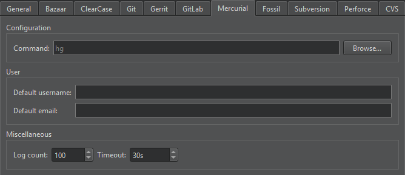

Mercurial
Mercurial is a free, distributed source control management tool.
In addition to the standard version control system functions described in Use common VCS Functions, you can select the following functions in the Tools > Mercurial submenu:
| Menu Item | Description |
|---|---|
| Import | Apply changes from a patch file. |
| Incoming | Monitor the status of a remote repository by listing the changes that will be pulled. |
| Outgoing | Monitor the status of a remote repository by listing the changes that will be pushed. |
| Pull | Pull changes from the remote repository. |
| Push | Push changes to the remote repository. |
Mercurial Preferences
To set preferences for Mercurial, select Preferences > Version Control > Mercurial:

- Command specifies the path to the command-line client executable.
- Default username and Default email specify the username and email address to use by default when committing changes.
- Log count sets the maximum number of lines the log can have.
- Timeout sets a timeout for version control operations.
See also Set up version control systems, Use common VCS functions, and Version Control Systems.